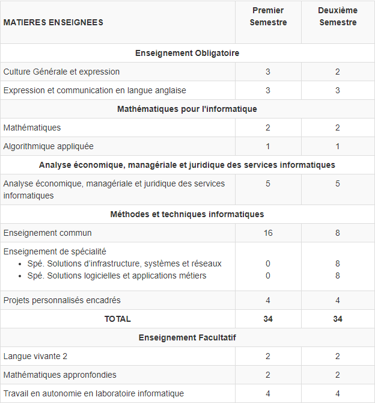
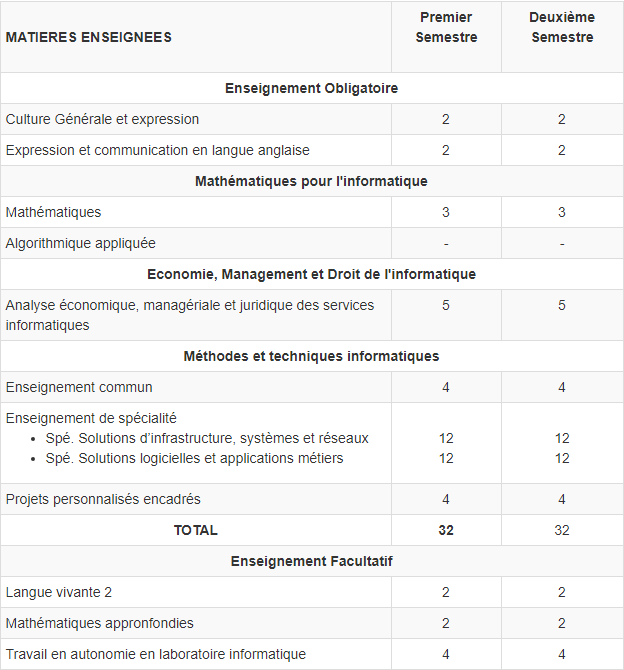
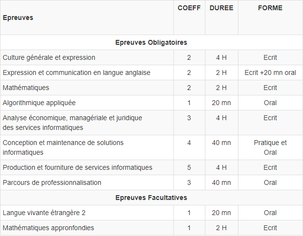

Présentation du BTS SIO
Le BTS S.I.O.(Services Informatiques aux Organisations) est, depuis 2011, le nouveau BTS Informatique de Gestion. Il forme les étudiants à la mise en place de solutions informatiques au sein des entreprises et comprend 2 options : la spécialité S.I.S.R. « solutions d’infrastructure, systèmes et réseaux » et la spécialité S.L.A.M. « solutions logicielles et applications métiers ».
À quels élèves le BTS SIO s’adresse-t-il ?
Il s’adresse aux titulaires d’un baccalauréat technologique, notamment STI2D , STMG ,d’un baccalauréat général S spécialité SI voire ES ou encore d’un baccalauréat professionnel (SEN) .
Programmes du BTS Services Informatiques aux Organisations :
Programme du BTS S.I.O. en Première Année
Programme du BTS S.I.O. en Deuxième Année
Examen du BTS S.I.O.
Poursuites d'études :
Les BTS a pour objectif l'insertion professionnelle, mais avec un très bon dossier ou une mention à l'examen, une poursuite d'études est envisageable en licence LMD, licence professionnelle, école d'ingénieur ou école spécialisée.